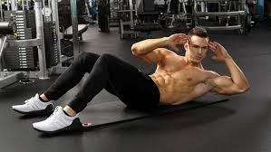
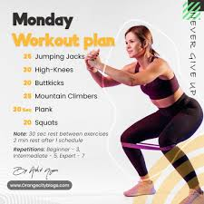
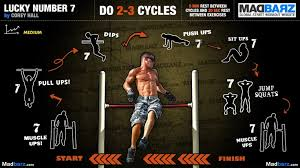
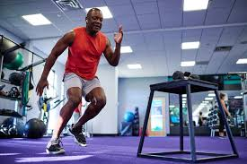

Intermediate Plan
For those with some experience, this plan includes moderate weightlifting, advanced bodyweight exercises, and interval training for enhanced stamina.
An intermediate plan in the context of a body fitness platform typically refers to a workout or training schedule designed for individuals who already have a solid foundation of fitness. They are no longer beginners, but they are not quite at an advanced level either. This type of plan would be tailored to challenge the individual with exercises that promote strength, endurance, flexibility, and cardiovascular health, pushing them to progress without overwhelming them.
Key Components of an Intermediate Fitness Plan:
Progressive Intensity: The workouts gradually increase in difficulty, whether it’s through adding more weight, more reps, more sets, or incorporating more complex exercises.
Variety: Mixing up different types of exercises (e.g., strength training, HIIT, yoga, Pilates) helps prevent plateaus and keeps the workouts exciting.
Recovery Time: While the intensity is increased, proper recovery time between sets and workouts ensures the individual avoids injury and can continue improving.

Focus on Technique: An intermediate plan emphasizes correct form, especially as more challenging exercises are introduced. It's important to prevent bad habits from developing.
Balanced Focus: The program should address all areas of fitness (strength, cardio, flexibility, and mobility) to prevent overtraining any one part of the body.
Tips for Following an Intermediate Plan:
Track Your Progress: Record your reps, sets, weights, and how you feel after each session. This can help you see your improvements over time and adjust when necessary.
Warm-up and Cool-down: These are essential for preventing injury and aiding in recovery. Don't skip them, even if you're short on time.
Rest and Recovery: At the intermediate level, recovery is just as important as the workouts. Make sure you’re getting enough sleep, hydration, and nutrition to support your body.
Focus on Weak Points: If you notice certain muscle groups or movements that feel weaker, add exercises that specifically target those areas. Balanced strength is key.
Vary the Routine: To keep progressing, change up your routine every few weeks. This could mean switching exercises, altering the rep/set scheme, or trying new types of training.
Mind-Muscle Connection: Pay attention to the muscles you’re working during each exercise. It’s not just about lifting heavy weights, but lifting with control and proper form.
Listen to Your Body: If you feel overly fatigued or in pain, it’s important to rest and potentially reassess your intensity levels.

Advanced Plan
Designed for fitness enthusiasts, this plan features heavy lifting, high-intensity interval training (HIIT), and advanced core exercises.

An advanced plan in a body fitness platform is typically aimed at individuals with a strong foundation in fitness who are looking to refine their training, achieve specific goals, and push their limits. It includes a comprehensive approach that addresses strength, endurance, muscle growth, and recovery, all while incorporating advanced techniques to maximize progress.
Key Components of an Advanced Plan:
Progressive Overload
Goal: To continuously challenge the muscles and improve strength and endurance.
How: Gradually increasing weights, reps, or intensity to ensure consistent progression.
Tip: Track your performance over time so you can identify when it’s time to increase the load or intensity. This could mean adding small weight increments or adjusting the number of sets/reps.
Periodization
Goal: To avoid plateaus and allow for recovery by cycling through different phases of training.
How: Alternate between phases focused on strength, hypertrophy (muscle growth), and endurance with strategic deload weeks.
Tip: Periodize your training every 6-8 weeks to ensure continuous improvement and to avoid burnout or injury.
Compound Movements
Goal: To maximize strength and muscle gains by engaging multiple muscle groups.
How: Focus on exercises like squats, deadlifts, bench press, overhead press, and rows.
Tip: Prioritize compound lifts at the beginning of your workouts when you’re freshest, and progressively increase the weight to build strength.
Specialized Training Techniques
Goal: To add variety and increase intensity for more advanced gains.
How: Use advanced techniques like supersets (two exercises back-to-back), drop sets (dropping weight to continue the set), pyramids (increasing and then decreasing weight), and eccentrics (slowing down the lowering phase of a lift).
Tip: Use these techniques sparingly to avoid burnout. Incorporate them into your workout routine once or twice a week to break through plateaus.
Recovery and Mobility
Goal: To ensure optimal recovery and prevent injury, while also increasing flexibility and joint mobility.
How: Integrate stretching, foam rolling, yoga, or dynamic warm-ups into your routine.
Tip: Dedicate 10-15 minutes post-workout to stretch and foam roll key areas. Take 1-2 active recovery days per week (light cardio or mobility-focused exercises).
Nutrition for Performance
Goal: To fuel the body properly for intense training and recovery.
How: Focus on consuming adequate protein, healthy fats, and complex carbohydrates. Ensure you are in a calorie surplus if muscle building is the goal, or a calorie deficit if fat loss is the focus.

Tip: Consume a protein-rich meal within 30-60 minutes post-workout to enhance muscle recovery. Track your macronutrients to ensure they align with your training goals.
Supplementation (Optional)
Goal: To support performance and recovery, though it’s not a replacement for solid training and nutrition.
How: Common supplements include creatine (for strength), BCAAs (for muscle recovery), whey protein (for protein intake), and caffeine (for performance boosts).
Tip: Always consult a healthcare provider before starting any new supplementation, and remember that supplements should enhance, not replace, a balanced diet.
Tracking and Analytics
Goal: To evaluate progress and make adjustments to your training.
How: Use fitness trackers, apps, or spreadsheets to track reps, sets, weight lifted, and body composition metrics like body fat percentage or muscle mass.
Tip: Use apps to log your workouts and track progress. Make adjustments based on your progress every 4-6 weeks to keep improving.
Additional Tips for Success with an Advanced Plan:
Consistency is Key
Stick to your training plan, and don’t skip workouts. Consistency over time leads to the best results.
Focus on Form and Technique
As you increase intensity, never compromise form for weight. Poor form can lead to injury and hinder long-term progress.
Listen to Your Body.
Advanced training can be taxing, so pay attention to signals of fatigue or potential injury. It’s important to take rest days as needed, and to adjust your training based on how you feel.
Sleep & Stress Management.
Prioritize quality sleep (7-9 hours per night) to support muscle recovery and hormone regulation. High levels of stress can hinder progress, so find ways to manage it (e.g., meditation, deep breathing, relaxation).
Vary Your Routine
To avoid plateaus and continue progressing, change your workout routine every 6-8 weeks. Switch up the exercises, rep schemes, or training focus (e.g., strength vs. hypertrophy).